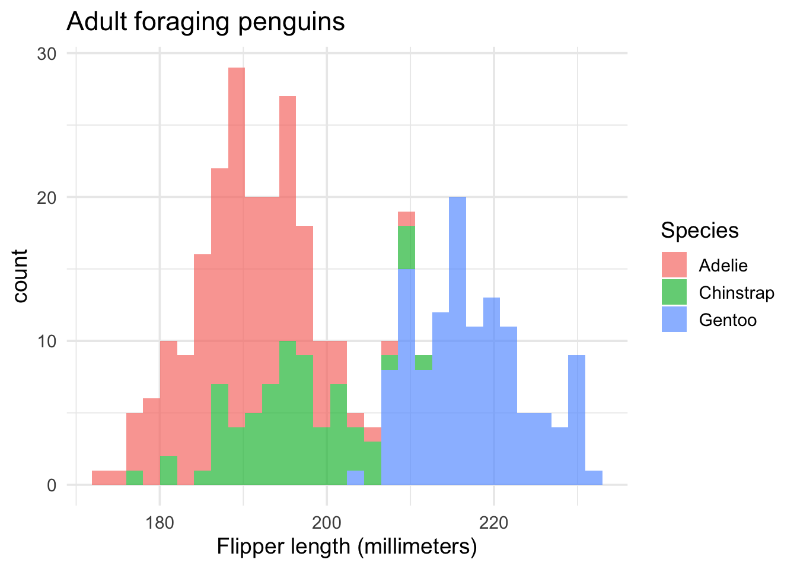
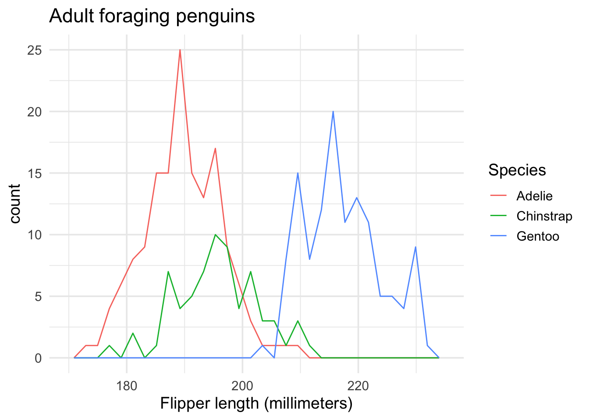
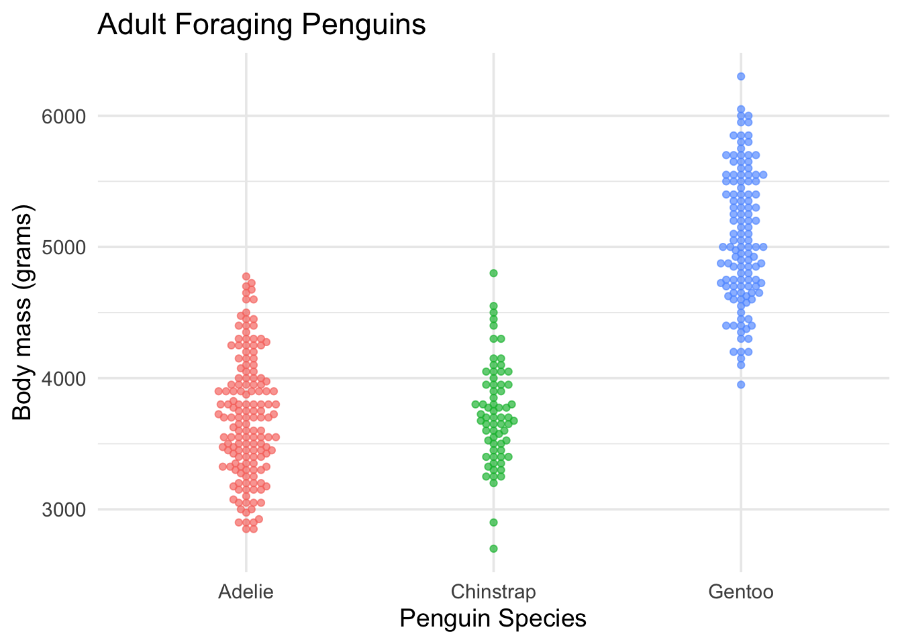
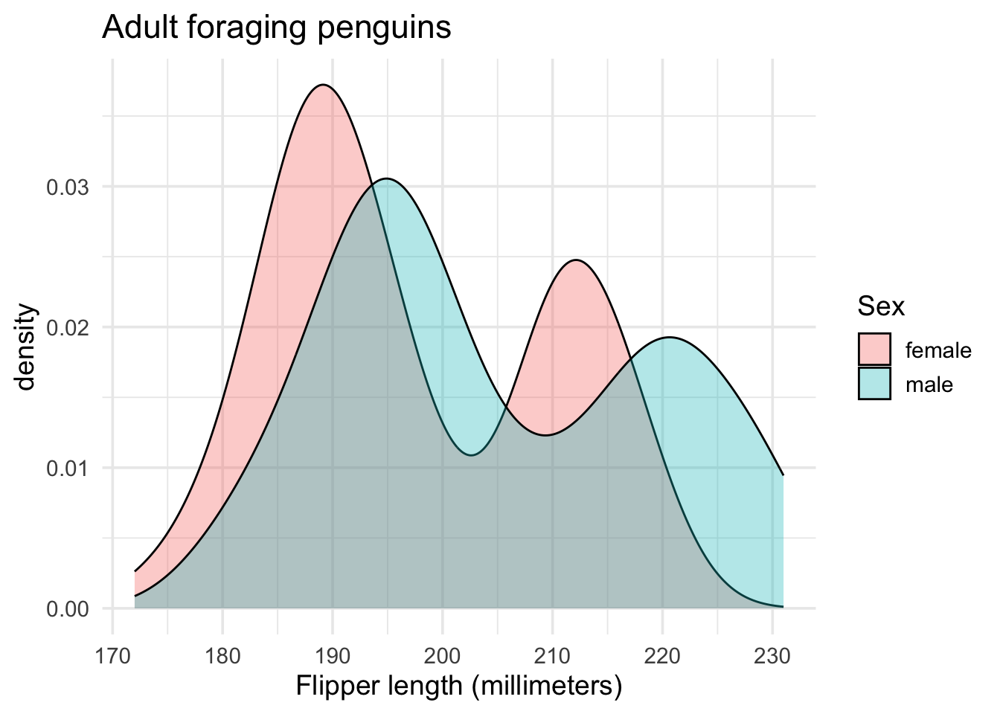
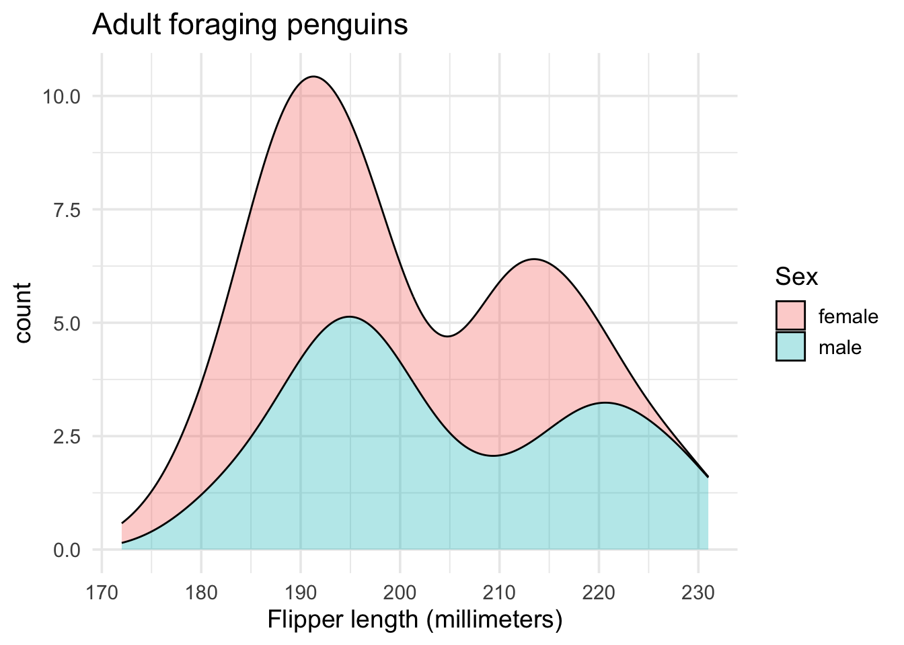
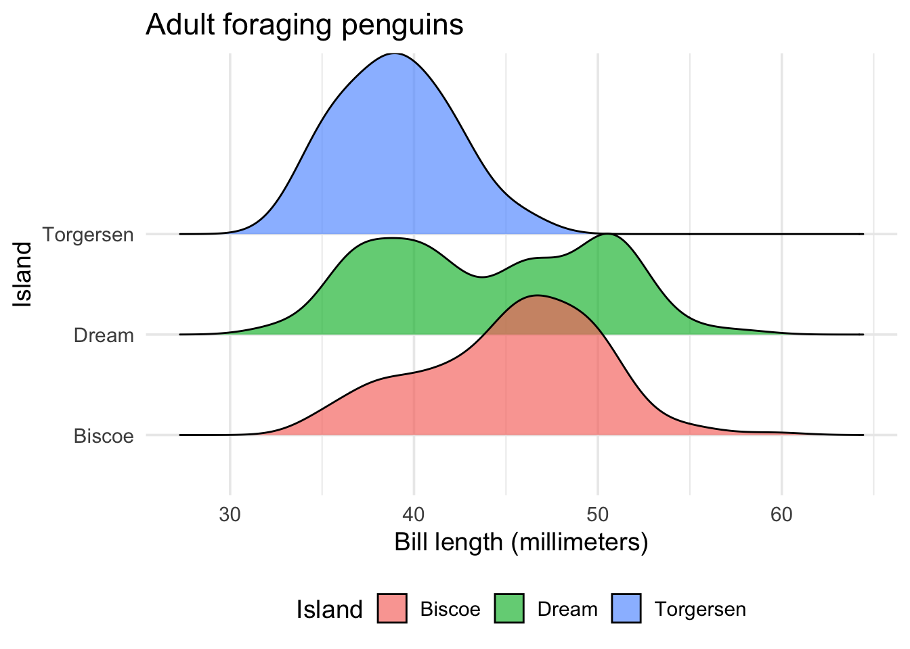
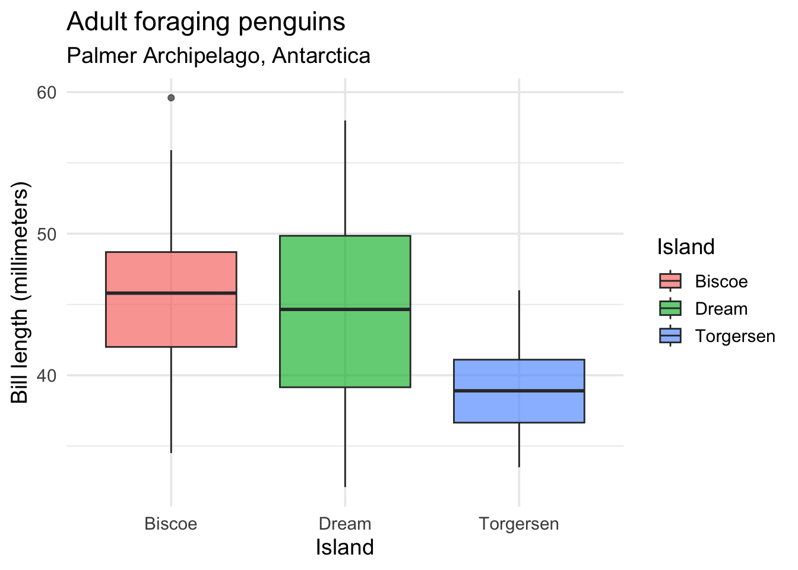
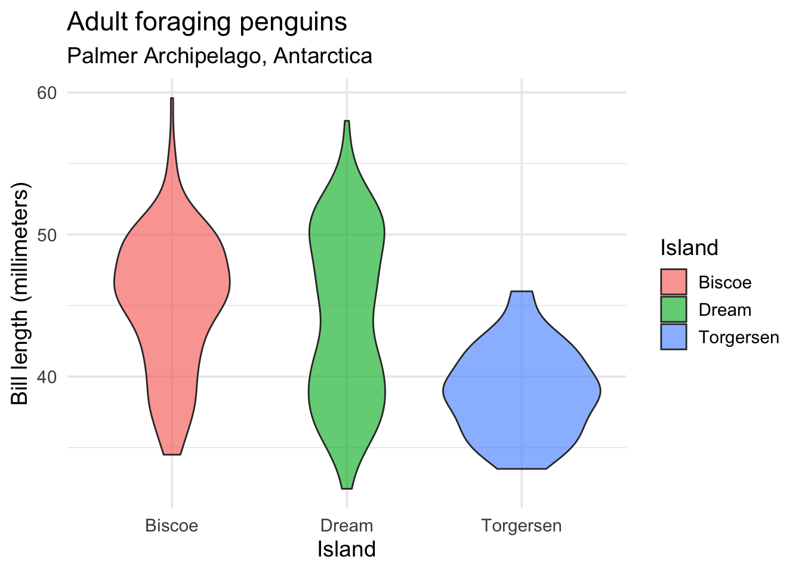

install.packages("palmerpenguins")
library(palmerpenguins)
library(ggplot2)DISTRIBUTIONS
Comparing distributions across groups with ggplot2 (and friends!)
OVERLAPPING HISTOGRAM
Note
When would I use this graph?
Overlapping histograms allow us to compare distributions across the groups of a categorical (or ordinal) variable.
PACKAGES:
Install packages.
DATA:
The penguins data
penguins <- palmerpenguins::penguins
glimpse(penguins)Rows: 344
Columns: 8
$ species <fct> Adelie, Adelie, Adelie, Adelie, Adelie, Adelie, Adel…
$ island <fct> Torgersen, Torgersen, Torgersen, Torgersen, Torgerse…
$ bill_length_mm <dbl> 39.1, 39.5, 40.3, NA, 36.7, 39.3, 38.9, 39.2, 34.1, …
$ bill_depth_mm <dbl> 18.7, 17.4, 18.0, NA, 19.3, 20.6, 17.8, 19.6, 18.1, …
$ flipper_length_mm <int> 181, 186, 195, NA, 193, 190, 181, 195, 193, 190, 186…
$ body_mass_g <int> 3750, 3800, 3250, NA, 3450, 3650, 3625, 4675, 3475, …
$ sex <fct> male, female, female, NA, female, male, female, male…
$ year <int> 2007, 2007, 2007, 2007, 2007, 2007, 2007, 2007, 2007…CODE:
Create the labels
Map flipper_length_mm to the x axis and species to fill
Set alpha to 2/3 inside geom_histogram()
labs_ovrlp_hist <- labs(
title = "Adult foraging penguins",
x = "Flipper length (millimeters)",
fill = "Species")
ggp2_ovrlp_hist <- ggplot(data = penguins,
aes(x = flipper_length_mm,
fill = species)) +
geom_histogram(alpha = 2/3)
ggp2_ovrlp_hist +
labs_ovrlp_histGRAPH:
Histograms work by dividing the variable provided to x into bins and counting the number of observations in each bin.
Experiment with different binwidths when comparing distributions across groups.

OVERLAPPING FREQUENCY POLYGONS
Note
When would I use this graph?
Overlapping frequency polygons are similar to overlapping histograms–they allow us to compare distributions of a continuous variable across the levels of a categorical variable.
Instead of using bars, frequency polygons use lines to show the shape of the distribution.
PACKAGES:
Install packages.
install.packages("palmerpenguins")
library(palmerpenguins)
library(ggplot2)DATA:
The penguins data.
penguins <- palmerpenguins::penguins
glimpse(penguins)Rows: 344
Columns: 8
$ species <fct> Adelie, Adelie, Adelie, Adelie, Adelie, Adelie, Adel…
$ island <fct> Torgersen, Torgersen, Torgersen, Torgersen, Torgerse…
$ bill_length_mm <dbl> 39.1, 39.5, 40.3, NA, 36.7, 39.3, 38.9, 39.2, 34.1, …
$ bill_depth_mm <dbl> 18.7, 17.4, 18.0, NA, 19.3, 20.6, 17.8, 19.6, 18.1, …
$ flipper_length_mm <int> 181, 186, 195, NA, 193, 190, 181, 195, 193, 190, 186…
$ body_mass_g <int> 3750, 3800, 3250, NA, 3450, 3650, 3625, 4675, 3475, …
$ sex <fct> male, female, female, NA, female, male, female, male…
$ year <int> 2007, 2007, 2007, 2007, 2007, 2007, 2007, 2007, 2007…CODE:
Create the labels
Map flipper_length_mm to the x and species to group
Map species to the color aesthetic inside the geom_freqpoly()
labs_ovrlp_freq_poly <- labs(
title = "Adult foraging penguins",
x = "Flipper length (millimeters)",
color = "Species")
ggp2_ovrlp_freq_poly <- ggplot(data = penguins,
aes(x = flipper_length_mm,
group = species)) +
geom_freqpoly(aes(color = species))
ggp2_ovrlp_freq_poly +
labs_ovrlp_freq_polyGRAPH:

OVERLAPPING DOT-PLOTS
Note
When would I use this graph?
We can use dot-plots to compare distributions of a continuous variable across the levels of a categorical variable, but we need to adjust the way the dots are displayed.
The geom_dotplot() function has adjustable method and binposition arguments that allow it to function similar to a histogram or frequency polygon.
PACKAGES:
Install packages.
install.packages("palmerpenguins")
library(palmerpenguins)
library(ggplot2)DATA:
Remove missing sex from penguins
peng_dotplot <- filter(penguins, !is.na(sex))
glimpse(peng_dotplot)Rows: 333
Columns: 8
$ species <fct> Adelie, Adelie, Adelie, Adelie, Adelie, Adelie, Adel…
$ island <fct> Torgersen, Torgersen, Torgersen, Torgersen, Torgerse…
$ bill_length_mm <dbl> 39.1, 39.5, 40.3, 36.7, 39.3, 38.9, 39.2, 41.1, 38.6…
$ bill_depth_mm <dbl> 18.7, 17.4, 18.0, 19.3, 20.6, 17.8, 19.6, 17.6, 21.2…
$ flipper_length_mm <int> 181, 186, 195, 193, 190, 181, 195, 182, 191, 198, 18…
$ body_mass_g <int> 3750, 3800, 3250, 3450, 3650, 3625, 4675, 3200, 3800…
$ sex <fct> male, female, female, female, male, female, male, fe…
$ year <int> 2007, 2007, 2007, 2007, 2007, 2007, 2007, 2007, 2007…CODE:
Create the labels
Map flipper_length_mm to x
Map species to fill (inside factor())
Inside geom_dotplot, set method to "histodot", binwidth to 1, and binpositions to "all"
labs_ovrlp_dotplot <- labs(
title = "Adult foraging penguins",
x = "Flipper length (millimeters)",
fill = "Species")
ggp2_ovrlp_dotplot <- ggplot(data = peng_dotplot,
aes(x = flipper_length_mm,
fill = factor(species))) +
geom_dotplot(
method = "histodot",
binwidth = 1,
binpositions = "all")
ggp2_ovrlp_dotplot +
labs_ovrlp_dotplotBEE-SWARM PLOTS
Note
When would I use this graph?
We can also use smaller dots (or points) to show the spread of values for a particular variable with bee-swarm plots
Install the ggbeeswarm package.
PACKAGES:
Install packages.
devtools::install_github("eclarke/ggbeeswarm")
library(ggbeeswarm)
install.packages("palmerpenguins")
library(palmerpenguins)
library(ggplot2)DATA:
The penguins data.
penguins <- palmerpenguins::penguins
glimpse(penguins)Rows: 344
Columns: 8
$ species <fct> Adelie, Adelie, Adelie, Adelie, Adelie, Adelie, Adel…
$ island <fct> Torgersen, Torgersen, Torgersen, Torgersen, Torgerse…
$ bill_length_mm <dbl> 39.1, 39.5, 40.3, NA, 36.7, 39.3, 38.9, 39.2, 34.1, …
$ bill_depth_mm <dbl> 18.7, 17.4, 18.0, NA, 19.3, 20.6, 17.8, 19.6, 18.1, …
$ flipper_length_mm <int> 181, 186, 195, NA, 193, 190, 181, 195, 193, 190, 186…
$ body_mass_g <int> 3750, 3800, 3250, NA, 3450, 3650, 3625, 4675, 3475, …
$ sex <fct> male, female, female, NA, female, male, female, male…
$ year <int> 2007, 2007, 2007, 2007, 2007, 2007, 2007, 2007, 2007…CODE:
Create the labels
Map island to the x axis and color
Map body_mass_g to the y axis
Add the ggbeeswarm::geom_beeswarm() layer (with alpha)
labs_beeswarm <- labs(
title = "Adult Foraging Penguins",
x = "Penguin Species",
y = "Body mass (grams)")
ggp2_beeswarm <- ggplot(data = penguins,
aes(x = species,
y = body_mass_g,
color = species)) +
ggbeeswarm::geom_beeswarm(
alpha = 2/3,
show.legend = FALSE)
ggp2_beeswarm +
labs_beeswarmGRAPH:
Adjust the size/shape of the swarm using method = or the geom_quasirandom() function from ggbeeswarm

OVERLAPPING (OR STACKED) DENSITY PLOTS
Note
When would I use this graph?
The geom_density() creates a smoothed version of the histogram and allows us to compare the distributions of a continuous variable across the levels of a categorical variable.
We can choose to overlap or "stack" the smoothed distributions.
PACKAGES:
Install packages.
install.packages("palmerpenguins")
library(palmerpenguins)
library(ggplot2)DATA:
Remove missing sex from the penguins data
peng_density <- filter(penguins, !is.na(sex))
glimpse(peng_density)Rows: 333
Columns: 8
$ species <fct> Adelie, Adelie, Adelie, Adelie, Adelie, Adelie, Adel…
$ island <fct> Torgersen, Torgersen, Torgersen, Torgersen, Torgerse…
$ bill_length_mm <dbl> 39.1, 39.5, 40.3, 36.7, 39.3, 38.9, 39.2, 41.1, 38.6…
$ bill_depth_mm <dbl> 18.7, 17.4, 18.0, 19.3, 20.6, 17.8, 19.6, 17.6, 21.2…
$ flipper_length_mm <int> 181, 186, 195, 193, 190, 181, 195, 182, 191, 198, 18…
$ body_mass_g <int> 3750, 3800, 3250, 3450, 3650, 3625, 4675, 3200, 3800…
$ sex <fct> male, female, female, female, male, female, male, fe…
$ year <int> 2007, 2007, 2007, 2007, 2007, 2007, 2007, 2007, 2007…CODE:
Create the labels
Map the flipper_length_mm to the x and sex to fill
Add the geom_density()
Set the alpha to 1/3 (to handle the overlapping areas)
labs_ovrlp_density <- labs(
title = "Adult foraging penguins",
x = "Flipper length (millimeters)",
fill = "Sex")
ggp2_ovrlp_density <- ggplot(data = peng_density,
aes(x = flipper_length_mm,
fill = sex)) +
geom_density(alpha = 1/3)
ggp2_ovrlp_density +
labs_ovrlp_densityGRAPH:
A downside of density plots is the lack of interpretability of the y axis
Make density area slightly transparent to handle over-plotting.

STACKED DENSITY PLOTS
CODE:
Create the labels
Map the flipper_length_mm to the x, add after_stat(count), and map sex to fill
Inside geom_density(), set position to "stack"
Set the alpha to 1/3
labs_stack_density <- labs(
title = "Adult foraging penguins",
x = "Flipper length (millimeters)",
fill = "Sex")
ggp2_stack_density <- ggplot(data = peng_density,
aes(x = flipper_length_mm,
after_stat(count),
fill = sex)) +
geom_density(position = "stack",
alpha = 1/3)
ggp2_stack_density +
labs_stack_densityGRAPH:
Adding after_stat(count) uses the density * n instead of the default density which ‘preserves marginal densities’.

RIDGELINE PLOTS
Note
When would I use this graph?
If we want to plot density curves but retain the interpretability of the axes, consider comparing multiple distributions using the ggridges package.
PACKAGES:
Install packages.
devtools::install_github("wilkelab/ggridges")
library(ggridges)
install.packages("palmerpenguins")
library(palmerpenguins)
library(ggplot2)DATA:
Remove missing island from penguins
peng_ridges <- filter(penguins, !is.na(island))
glimpse(peng_ridges)Rows: 344
Columns: 8
$ species <fct> Adelie, Adelie, Adelie, Adelie, Adelie, Adelie, Adel…
$ island <fct> Torgersen, Torgersen, Torgersen, Torgersen, Torgerse…
$ bill_length_mm <dbl> 39.1, 39.5, 40.3, NA, 36.7, 39.3, 38.9, 39.2, 34.1, …
$ bill_depth_mm <dbl> 18.7, 17.4, 18.0, NA, 19.3, 20.6, 17.8, 19.6, 18.1, …
$ flipper_length_mm <int> 181, 186, 195, NA, 193, 190, 181, 195, 193, 190, 186…
$ body_mass_g <int> 3750, 3800, 3250, NA, 3450, 3650, 3625, 4675, 3475, …
$ sex <fct> male, female, female, NA, female, male, female, male…
$ year <int> 2007, 2007, 2007, 2007, 2007, 2007, 2007, 2007, 2007…CODE:
Create the labels
Map bill_length_mm to the x axis
Map island to the y axis and fill
Add the ggridges::geom_density_ridges() layer (with alpha set to 2/3)
Move the legend to the bottom with theme(legend.position = "bottom")
labs_ridges <- labs(
title = "Adult foraging penguins",
x = "Bill length (millimeters)",
y = "Island", fill = "Island")
ggp2_ridges <- ggplot(data = peng_ridges,
aes(x = bill_length_mm,
y = island,
fill = island)) +
ggridges::geom_density_ridges(alpha = 2/3) +
theme(legend.position = "bottom")
ggp2_ridges +
labs_ridgesGRAPH:
Ridgeline plots are excellent for comparing continuous distributions across groups.

GROUPED BOX-PLOTS
Note
When would I use this graph?
Grouped box-plots display five different statistical measures across a series of categories, or groups, of a discrete, ordinal, or interval variable.
The five statistical measures are 1) the first quartile, 2) the second quartile, and 3) the third quartile. The fourth and fifth values are the largest/smallest values no further than 1.5 X inter-quartile range from the hinges.
PACKAGES:
Install packages.
install.packages("palmerpenguins")
library(palmerpenguins)
library(ggplot2)DATA:
Remove the missing island values from the penguins data.
peng_box <- filter(penguins, !is.na(island))
glimpse(peng_box)Rows: 344
Columns: 8
$ species <fct> Adelie, Adelie, Adelie, Adelie, Adelie, Adelie, Adel…
$ island <fct> Torgersen, Torgersen, Torgersen, Torgersen, Torgerse…
$ bill_length_mm <dbl> 39.1, 39.5, 40.3, NA, 36.7, 39.3, 38.9, 39.2, 34.1, …
$ bill_depth_mm <dbl> 18.7, 17.4, 18.0, NA, 19.3, 20.6, 17.8, 19.6, 18.1, …
$ flipper_length_mm <int> 181, 186, 195, NA, 193, 190, 181, 195, 193, 190, 186…
$ body_mass_g <int> 3750, 3800, 3250, NA, 3450, 3650, 3625, 4675, 3475, …
$ sex <fct> male, female, female, NA, female, male, female, male…
$ year <int> 2007, 2007, 2007, 2007, 2007, 2007, 2007, 2007, 2007…CODE:
Create the labels
Map island to the x axis and to fill
Map bill_length_mm to the y axis
Add geom_boxplot() and set the alpha to 2/3
labs_grp_boxplots <- labs(
title = "Adult foraging penguins",
subtitle = "Palmer Archipelago, Antarctica",
x = "Island", fill = "Island",
y = "Bill length (millimeters)")
ggp2_grp_boxplots <- ggplot(data = peng_box,
aes(x = island,
y = bill_length_mm,
fill = island)) +
geom_boxplot(alpha = 2/3)
ggp2_grp_boxplots +
labs_grp_boxplotsGRAPH:
When a categorical variable is supplied, the plot will contain a box for each level or group.

GROUPED VIOLIN PLOTS
Note
When would I use this graph?
A ‘violin plot’ is a variation of a density or ridgeline plot, where the distribution is plotted symmetrically creating a two-sided, smoothed distribution.
PACKAGES:
Install packages.
install.packages("palmerpenguins")
library(palmerpenguins)
library(ggplot2)DATA:
Remove missing island from penguins
peng_violin <- filter(penguins, !is.na(island))
glimpse(peng_violin)Rows: 344
Columns: 8
$ species <fct> Adelie, Adelie, Adelie, Adelie, Adelie, Adelie, Adel…
$ island <fct> Torgersen, Torgersen, Torgersen, Torgersen, Torgerse…
$ bill_length_mm <dbl> 39.1, 39.5, 40.3, NA, 36.7, 39.3, 38.9, 39.2, 34.1, …
$ bill_depth_mm <dbl> 18.7, 17.4, 18.0, NA, 19.3, 20.6, 17.8, 19.6, 18.1, …
$ flipper_length_mm <int> 181, 186, 195, NA, 193, 190, 181, 195, 193, 190, 186…
$ body_mass_g <int> 3750, 3800, 3250, NA, 3450, 3650, 3625, 4675, 3475, …
$ sex <fct> male, female, female, NA, female, male, female, male…
$ year <int> 2007, 2007, 2007, 2007, 2007, 2007, 2007, 2007, 2007…CODE:
Create the labels
Map island to the x, bill_length_mm to the y, and island to fill
Set alpha to 2/3
labs_grp_violin <- labs(
title = "Adult foraging penguins",
subtitle = "Palmer Archipelago, Antarctica",
x = "Island", fill = "Island",
y = "Bill length (millimeters)")
ggp2_grp_violin <- ggplot(data = peng_violin,
aes(x = island,
y = bill_length_mm,
fill = island)) +
geom_violin(alpha = 2/3)
ggp2_grp_violin +
labs_grp_violinGRAPH:
Violin plots can allow us to compare the ‘center’ and ‘spread’ of continuous variables across categorical groups.
